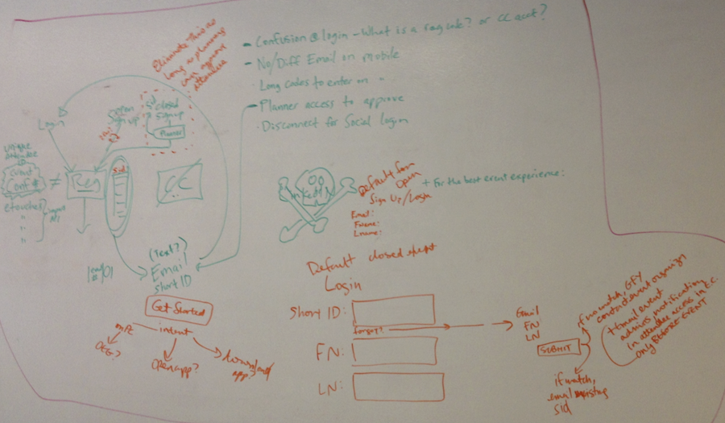
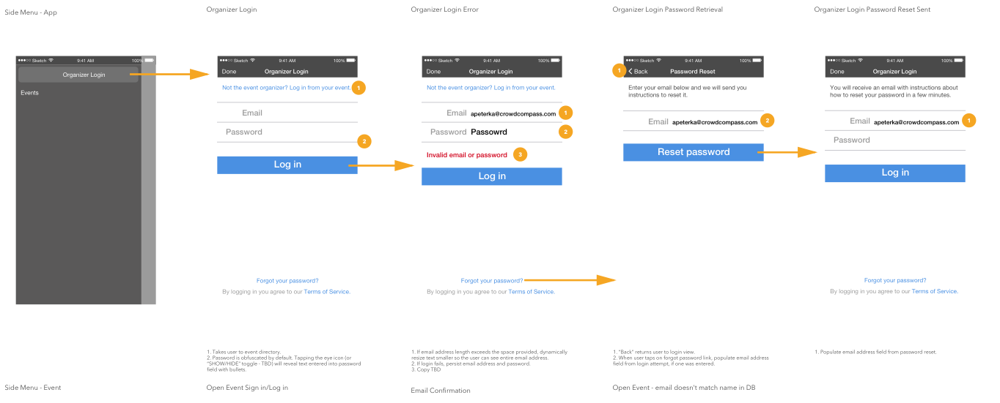

CrowdCompass App Login Redesign, 2015
Skills
- Usability testing
- Wireframing
- Mobile UI design
Tools
- Sketch
- InVision
Artifacts
- User flows
- Mockups
- Interactive prototypes
Problem
Only about 27% of event attendees were logging into the CrowdCompass app, which meant they didn't see the full functionality that event planners were paying for. We identified that asking attendees to choose between two different methods of logging in created confusion, and that planners needed more tools to assist attendees who were trying to log in. We also wanted to increase our current level of security within the app in order to build relationships with customers in the finance and healthcare fields.

Solution
After identifying these login issues through surveys and interviews with customer support staff, we created a new login flow that greatly simplified the process for event attendees. I created wireframes to illustrate the various pathways through the process, and incorporated UI design elements from other parts of the app to build mockups. These became a clickable InVision prototype that I utilized to conduct remote and in-person usability testing with participants who matched our attendee personas.

Result
Reducing cognitive friction among attendees and adding planner tools led to an average increase of the login rate to 40% and a significant decrease in login-related customer support calls. Additionally, conducting and sharing the results of usability testing allowed the development team to move forward with greater confidence.